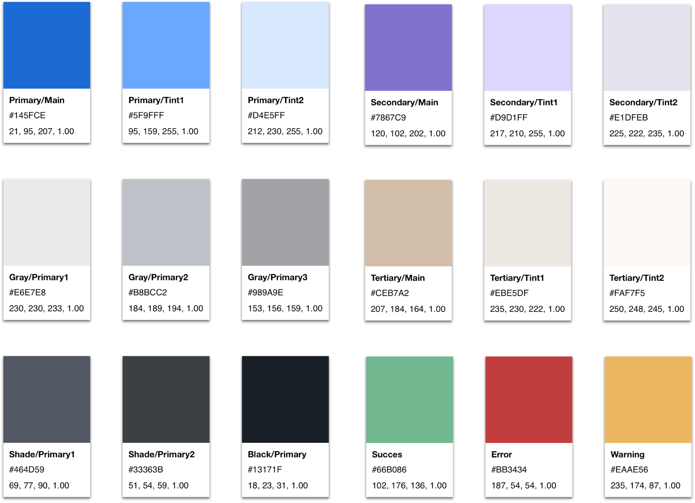
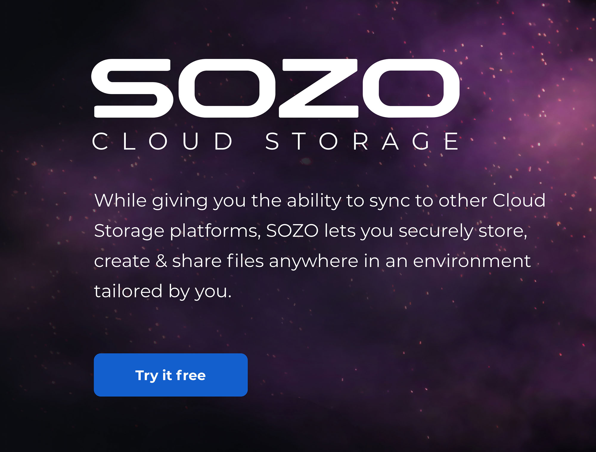
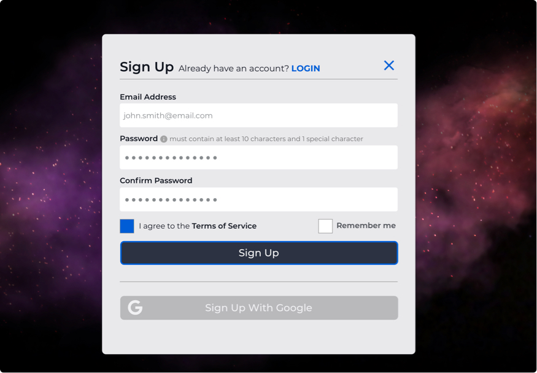

Summary

SOZO Cloud Storage
UX & Visual Design | Branding
SOZO is an advanced cloud storage application that has the ability to sync to other cloud storage platforms. SOZO lets users securely store, create & share files in an environment tailored by them.
See Prototype
Design Roles
- UX Design
- Visual Design
- Branding & Identity
Deliverables
- Competitive Analysis
- User Surveys
- User Personas
- User Stories & Flows
- Paper Mockups
- Wireframes
- Usability Testing
- Logos & Style Guide
- High Fi Mockups
- Clickable Prototypes
Tools
- Sketch
- InVision
- Adobe CS
- Usability Hub
- Maze
Overview
Problems

-
Lack of Cohesiveness
Numerous users incorporate several cloud storage services for different needs, requiring them to hunt for their files on multiple platforms.
-
Security Weaknesses
Within the established marketplace, there is a lack of options to encrypt files and folders for different circumstances and purposes.
-
Customization & Organization
Inability to customize options such as the interface, organization of folders & files, & visual personalization of icons for folders and files.
Solutions
-
Sync Other Cloud Applications
Introduce an application that can sync with other cloud platforms allowing users to incorporate all of their services into one.
-
Provide Security Options
Deploy a range of security settings for all content and accounts within the application.
-
Supply Customization Choices
Offer users multiple options for organizing and viewing all of their content.
While most people use cloud storage, many users are incorporating multiple platforms for different purposes. Protecting data, knowing where data is located and customizing organization is essential.
While competitive analysis and user research revealed a myriad of frustrations for users of current cloud applications the main pain points are listed above.
Discovery
Competitive Analysis Highlights
To find out what I was up against in the cloud storage arena, I began by performing a full Competitive Analysis including a SWOT analysis of 3 of the top competitors.
While all three of these services offer a reasonably priced, and relatively easy to use experience, these defining factors stand out as obstacles for these entities:
Dropbox
- Inability to link to other cloud storage services
- Lack of zero-knowledge encryption for files & folders
- Limited customization options
- Tainted Reputation – 2012 security breach
GoogleDrive
- Inability to link to other cloud storage services
- Lack of zero-knowledge encryption for files & folders
- Limited customization options
Sync.com
- Inability to link to other cloud storage services
- No applications for creating or modifying files
- No customization options
- Limited user experience
Key Insights
Dropbox, Google Drive, and Sync.com all have certain advantages in their favor but their distinguishing characteristics (shown above), offer some insights as to how to pierce into this market place.
See Full Analysis
User Research Highlights
Although the Competitive Analysis provided some insight into the realm of cloud storage platforms, digging deeper required the use of a survey posted on multiple public forums
Testing not only the client’s assumptions but mine as well provided the data showing critical takeaways for development.
94%
used at least one type of cloud storage application, many used multiple forms.
86%
used a desktop or laptop computer to access their application, not a mobile device.
45%
stated that the lack of customization abilities was one of their main difficulties when using cloud storage.
59%
would like to see overall security and privacy enhancements within the application.
62%
of users want the ability to color code files and folders for organization purposes.
83%
said that the ability to customize their application would be beneficial to them.
Key Insights
These numbers show that including user customization within a cloud storage application (if addressed properly), could potentially shift the entire market into uncharted territory.
See Survey Results
User Personas
Three users with unique roles and experience levels were interviewed about their goals and frustrations when using cloud storage applications.
The interviews coupled with the primary audience of creatives from the user surveys served to create the three personas shown below.
Sally The Student
25 Y/O Student
Goals
Wants to organize her content differently than her service currently allows. She also wants options for protecting and tracking her files when she shares them.
Frustrations
Can’t customize solutions to organize her content and she lacks security options for files and folders
Ina The Illustrator
36 Y/O Illustrator
Goals
Would like to spend less time organizing her files and more time creating and wants to personalize her cloud storage application to increase her productivity.
The lack of ability to place visual icons or images on her folders causes the need to open hundreds of them to find what file she wants.
Max The Manager
33 Y/O Digital Asset Manager
Goals
Wants easy to use security options for files & folders. He needs secure sharing and collaboration of files by having permission options for different users.
Can’t find a service offering top-notch security and maximum usability. Unable to find a service to track links and permissions granted to users.
Information Architecture
User Stories
Using the information gathered from the Discovery and Strategy phases, I complied user stories to demonstrate the main features of the application.
I prioritized features according to the earlier research & developed personas into high, medium and low priority tasks. There were also three types of user scenarios created for New Users, Returning Users and All Users.
- As a new user, I want to sign up for an account using email.
- As a new user, I want to choose my tier option for the amount of space I can afford.
- As a new user, I want payment options for my upgraded tier if applicable.
- As a user, I want the ability to sync with my Adobe Creative Cloud Account.
Sample User Stories | Expected Outcomes omitted here due to visibility issues.
See User Stories
User Flows
User Stories were converted into User Flows to demonstrate how the user could interact with the product and accomplish specific tasks. These were first sketched out on paper.
Further development and iterations were rendered in the application, Draw.io.
Change Security Of Files/Folders User Flow | Draw.io format
Wireframes
After establishing the user stories and flows, I began creating the skeletal structure of the application with pencil and paper to quickly sketch out the rough ideas.
These were then transformed into low fidelity digital mock-ups and prototypes using Sketch and InVision for prototyping.
Dashboard Empty State | Hand sketched format
Dashboard Empty State | Created in Sketch
Dashboard Filled State | Hand sketched format
Dashboard Filled State | Created in Sketch
Usability Testing Round 1
Once the prototype was in place, it was time for user testing. 2 of the tests were conducted in-person using an InVision prototype, and 1 was performed remotely using the tool Maze to record the results.
Testing Tasks
- Create a new, free account and secure it with 2-factor authentication.
- Without using drag and drop, add some files from your computer to your new cloud.
- Place the file, “dance_in_water.jpg” into the folder, “Inspirational Photos” without using drag & drop.
- Link your Adobe Creative Cloud to this Cloud Storage application so that you can see all of your files from that cloud as well.
Testing Conclusions
While overall the testing went well, It did bring up some issues that needed rectification. 2 of 3 users had some problem with the ellipsis on the folders and files.
It was also noted that the Share icon and label was not necessary to be included in the top level navigation. Removing it and addressing that function within each file or folder would help reduce the cognitive load on users regarding the dashboard.
These problems would be addressed in the high fidelity phase of the project.
Problamatic Areas | Highlighted Above
Branding
After establishing the functionality of SOZO, it was time to develop the name, look, and feel for the application. See the SOZO Style Guide for more details.
Brand Discovery | Mind Mapping, Moodboards, & research were used in the development of the logo & branding visuals.
Nomenclature
The name SOZO stems from both the Ancient Greek word, meaning; To Save or To Rescue and the Japanese word, meaning; Creation or To Imagine.
The combination of these two meanings is intended to reflect the characteristics of what the application does. It saves or rescues files and folders from local directories, and allows users to create and organize data from within its space in a creative manner.
Logo Design
With the name established it was time to develop the logo. Sketching, iterations, & development in Adobe Illustrator brought about the final mark which is fully modular and alternates were designed for specific use cases.
Initial Sketches | Further development in Illustrator
Final Logos
Whether in a positive or negative form, every character in the name SOZO is represented in the icon. Other symbols such as fire, infinity and syncing are present leaving the mark open to interpretation for the viewers.
Final Main Logo | See style guide for other options and use cases
Typography
Montserrat
Montserrat characterizes a modern typeface allowing a geometric look similar to the word-mark in the logo, yet different enough to create a complimentary feel. It lends itself well to the futuristic and airiness intended for the brand itself and reflects modern simplicity.
Palette
The colors used for SOZO were comprised from a complimentary palette ranging from the blue/grey range to denote trustworthiness and eliminate stress, to the warmer orange and purple tones meant to be used as accent colors to keep the brand from feeling muted and dull.

Visual Design
High Fidelity Mockups
Using the SOZO Style Guide, the wireframes were transformed into mockups displaying the branding and visual aesthetics that were developed. The issues that were noted during the 1st round of wireframe testing involving the “ellipsis” and the “share button” were taken into account here as well.
Although the initial survey indicated that 86% of participants used a desktop or laptop computer to access their application, along with the desktop version, mobile mockups were created per the client’s request.
Preference Testing
Before moving on to creating the high fidelity prototype, there were still some options for the mockups that needed clarification as to which would be best. UsabilityHub was employed to determine the outcomes to the following questions.
CTA Buttons
Readability of the text within the CTA buttons when words were in all caps vs title case.
73%
thought the text of the CTA buttons in all caps was easier to read.
Sign Up Form
Would participants prefer to enter a password once and be able to view it, or enter a password twice with the inclusion of a confirmation field?
60%
preferred entering their password only once with the ability to view it because it was faster for them.
Choosing Plans
When choosing a plan, would participants prefer a consistent color within the plan options, or a varied color schemes to aid in differentiating their choices?
90%
preferred a varied color scheme within the tiered plan options because it made the options more visible to them.
Usability Testing Round 2
The final prototype was produced and tested again to find remaining or newly created flaws in the usability of the application. For this round of testing, all three participants were tested in-person.
It’s important to note that all participants completed other tasks and testing for the benefit of the application.
Testing Tasks
- Create a new, free account and secure it with 2-factor authentication.
- Without using drag and drop, add some files from your computer to your new cloud.
- Place the file, “dance_in_water.jpg” into the folder, “Inspirational Photos” without using drag & drop.
- Link your Adobe Creative Cloud to this Cloud Storage application so that you can see all of your files from that cloud as well.
- Create and save a new document within the application interface.
Testing Conclusions
Although all users tested during this round accomplished the given tasks with relative ease, 2 opportunities presented themselves to further improve upon the prototype.
- 2 out of 3 participants were curious about the functionality of the “info” button on folders and files within the grid view.
- The information about files and folders could have increased contrast for accessibility purposes when shown in the list view.
Info Button | The info button functionality was implemented for users so they would not have to switch between list and grid view to display needed information about folders and files.
Increasing the font weight on the information within the list view resolved a possible accessibility issue for users.
Contrast Issue | Before
Contrast Issue | After
Final Design
Conclusion
Accomplishments
By offering users a cloud storage application that links to other storage programs, SOZO grants users a common place to see and use all of their content without the hindrance of signing into multiple platforms. SOZO also offers various security options for files, folders, and accounts granting users the protection they want for their content. Finally, SOZO provides multiple customization options for users allowing them to organize and display their content in whatever way is most optimal for them.
User testing helped to verify the accomplishments with several of the participants stating that they would be interested in using the product after it was developed fully.
What I Learned
Although I intended to initially develop a small design system near the beginning of the project to speed up the process, it quickly expanded and at times was more of an obstacle than an aid. That being said, the value of a design system paid off in the end, but I learned that the implementation of such a system should come further along in the process of development.
Taking small steps at the beginning and resisting the urge for giant leaps is essential for a product to succeed.
Future Iterations
While the features within the MVP were addressed in this version, the next round of SOZO would include a full prototype of the mobile version, additional functionality showing the ways a user can customize their files and folders, and solutions to notifications for users sharing data.